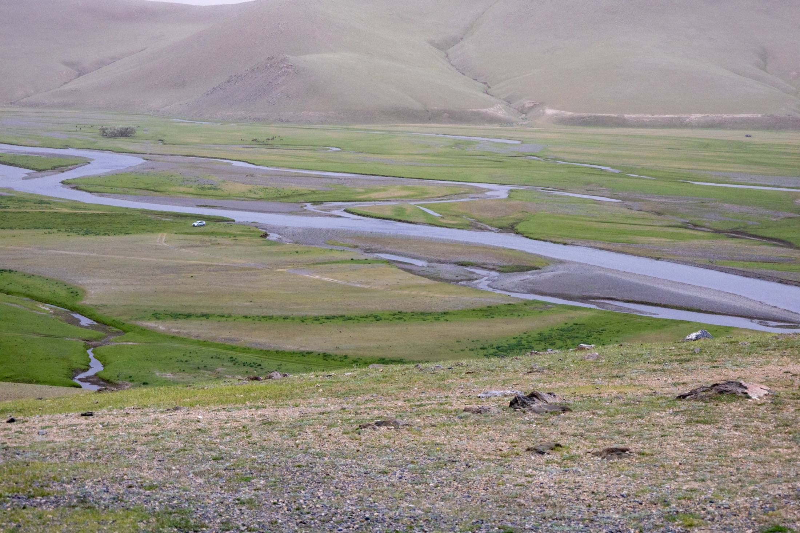
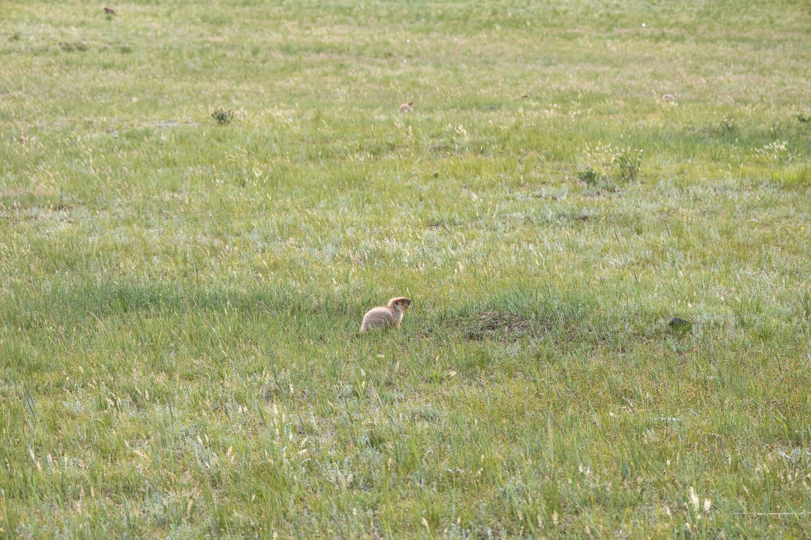

Ulaanbaatar
城市的第一眼
白色立面、玻璃反光和很高的蓝天，给这趟旅程开了一个清晰的头。城市是短暂停留，也是通往草原前的坐标。
Summer on the steppe
从乌兰巴托的蓝天出发，穿过河谷、丘陵和一望无际的草原，把风声、云影和路上的停顿留在这里。
张精选照片
个视觉章节
草原、河流与天空
Journal
Ulaanbaatar
白色立面、玻璃反光和很高的蓝天，给这趟旅程开了一个清晰的头。城市是短暂停留，也是通往草原前的坐标。

River Valley
水道绕过草甸，远处的山坡颜色柔和。车停下来时，风会把空间拉得很长。

Wildlife
安静看久一点，草地会开始出现细节：一点移动、一声叫唤，还有偶然闯进镜头的小生命。
Gallery
Route Notes
可以把每天的路线、住宿、交通、天气和个人感受继续写进这里。页面已经按照片叙事组织，后续只需要替换文字或追加章节。
抵达乌兰巴托，记录城市建筑与广场。
向草原行进，拍摄开阔地貌、云层和道路。
停留河谷与牧场，整理最有记忆点的照片。